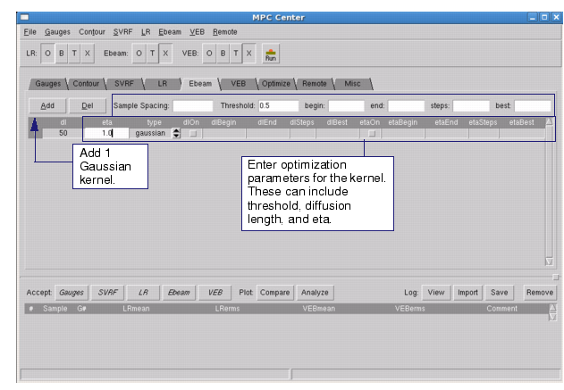

Configure the
E-beam model in the Ebeam tab
of MPC Center.
Procedure
- In MPC Center, click the Ebeam tab (see Figure 1).
Figure 1. E-Beam Model Configuration
- In the Ebeam tab, perform the
following steps:
- Click the Add button to add a Gaussian
kernel. This is used to perform lithographic simulations using geometry
on the input layer by convolving the input image with the Gaussian
kernel of the diffusion length. Typical values are between 20-50
nm.
- Enter parameters for the added
kernel. This can include the threshold, diffusion length, and eta.
Qualifiers for each parameter include the beginning and end range,
best “fixed” value, and number of steps. These parameters correspond
directly to the same used in the ebeam_model_load setup file command.
- In the MPC Center button bar,
set the run control so that only the E-beam and VEB options are
enabled. Set Ebeam and VEB to O (Optimize) or T (Try) and LR to X.
- Click the Run button to generate the
E-beam model.
- The E-beam model can also
be created using the setlayer ebeam_simulate and ebeam_model_load commands in the MPC setup file.
Refer to “Optional E-Beam Model Definition” for information. E-beam calibration
can also be performed using a batch command, mpcflow_v2 (see “mpcflow_v2” for a complete description).